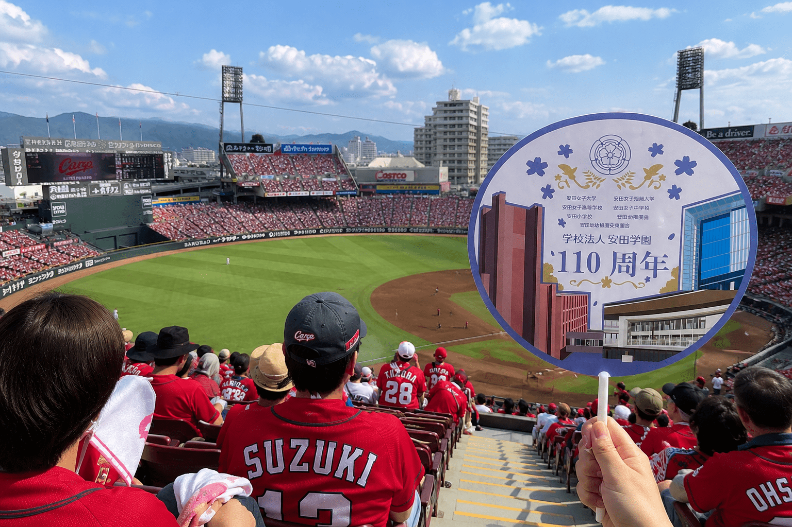

作品のポイント
目次
スケジュール
安田学園110周年を記念に作成した団扇デザインです。
- スケッチ
- 制作
- 優秀賞受賞
- 授賞式
- 団扇配布
作品紹介

これまで築いてきた伝統と、未来への飛躍を象徴する校舎をデザインしました。 花は学園の歴史の象徴であり、新しい世代への希望も表しています。 過去から現在、そして未来へ繋がっていく安田学園の姿勢を表現しました。 知性と品格のある雰囲気を重視したデザインです。
デザイン全体では、過去から現在、そして未来へと受け継がれていく安田学園の姿勢を表現することを意識しました。 歴史ある学園らしい落ち着きや品格を大切にしながらも、未来への期待や前向きな印象が伝わるよう、 色彩や構成にもこだわっています。 学園の魅力や価値を多くの人に感じてもらえるよう、 知性と温かみを兼ね備えたデザインを目指しました。
コンセプト
校舎を主役に構成することで、学園が積み重ねてきた歴史と教育への想いを視覚的に表現しました。
また、花のモチーフを取り入れることで、学びを通して成長する学生の姿や、新たな一歩を踏み出す未来への期待を表しています。
落ち着きのある色彩でまとめることで、学園らしい上品で親しみやすい印象を目指しました。